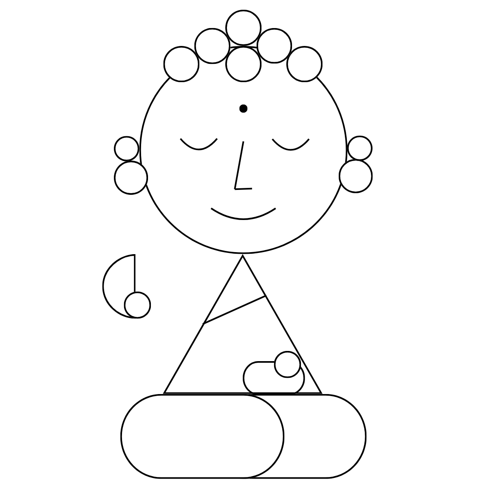

DROS-dharma
DROS 的原意為 「Dharma Reasoning Operating System (佛法邏輯推理作業系統)」。
它是全球首創以「確定性本體論路由 (Deterministic Ontological Routing)」與天台宗「判教 (Panjiao) 知識架構」為核心的 AI 佛法義理推理引擎。
🎁 免費打包，在家玩個夠！ 我們將 20,947 個黃金名相節點與大覺藏原典全量開源。歡迎直接免費下載，在您本機電腦與 Obsidian 打造專屬於您的無幻覺伴學小書僮！
傳統大語言模型 (LLM) 與基於向量相似度的 RAG 檢索，存在嚴重的「語境盲目性 (Context Blindness)」。在佛學大藏經與嚴謹哲學中，這會導致極為致命的「跨宗派知識污染與語義漂移」（例如：將禪宗的「本覺」、唯識的「阿賴耶識」與中觀的「緣起自性空」強行抹平混淆，甚至憑空編造經文卷數）。
DROS 借鑑古印度與中國天台宗智顗大師的「判教」智慧，將概念邊界從軟性的 Prompt 提示詞，升級為作業系統層級的物理 Access Control Lists (ACL)。配合 **20,947 個黃金名相本體節點**，實現 0 延遲語義隔離與 100% 無幻覺定錨。
DROS 的本體論路由與金剛契約物理熔斷機制，已發表於國際 Zenodo 學術數據庫：
Deterministic Ontological Routing Framework for Domain-Restricted LLM Systems: Design and Implementation of DROS v8.0
論證如何利用天台宗「判教」架構解決跨宗派語義漂移。先導測試中 7/7 道跨宗派高混淆難題達到 0 污染，Token 降低 72%，檢索延遲降至 12ms。
Constraint-as-Code: Deterministic LLM Governance via Buddhist Doctrinal Classification and Physical Circuit Breaking
論證如何將判教轉化為機器可驗證的「金剛契約 (Vajra Contract)」，並透過 C-FFI 建立 CPU 端物理熔斷點，並將此機制泛化為 DROS 商用安全 OS。
專為學者與嚴謹求真者設計。小悟只進行 100% 嚴格的原典學術推演。若本地資料庫中缺乏明確定錨的 T-Number 出處，系統秉持「無依據、不妄言」原則，直接在 C-ABI 邊界進行物理熔斷（推演終止），絕不注水或產生 1 絲幻覺。
內嵌「雙軌對照安全網」。小悟會先啟動金剛模式劃定原典邊界，隨後立即接續菩薩詮釋，以溫潤、親切的語氣提供現代跨界比喻、歷史脈絡與學者見地，供讀者隨流參照。
Python 3.10+（請務必在安裝時勾選 Add Python to PATH）。打開終端機 (Terminal / PowerShell)，執行 Git 複製指令：
git clone https://github.com/Top-Celestial-Company-Ltd/Dharma-Reasoning-Operating-System.git cd Dharma-Reasoning-Operating-System
DROS Doctrinal Copilot 並切換為打開 (啟用)。Gemini API Key 填入您的 Google API Key 即可！若您是想自己修改 Python 核心演算法 (如 Weaver 或 GuardVM) 的開發者：
# Windows 雙擊執行 gemini_proxy.vbs，或終端機執行： python src/proxy/gemini_proxy.py
並將外掛 API Endpoint 指向 http://127.0.0.1:8080/v1。
當載入高達 20,947 個概念節點時，Obsidian 的 Graph View 預設會嘗試進行全量渲染，造成嚴重的 CPU 爆滿與卡死崩潰。
v8.0 預先在 .obsidian/graph.json 寫入了先發制人（Preemptive）過濾規則：
"search": "-\"##- **層級**: 3\" -\"20-佛光辭典全\""
效果：啟動時自動排除 Layer 3 實體/名物/地理等 1.5 萬個非義理節點與巨型辭典，只對 Layer 1 & 2 的核心義理進行輕量渲染，保證萬級數據庫載入如絲般順暢。
歡迎前往官方 GitHub 倉庫取得最新源碼與大覺藏發行套件。
⭐ 前往 GitHub 倉庫頁面 (Dharma-Reasoning-Operating-System)